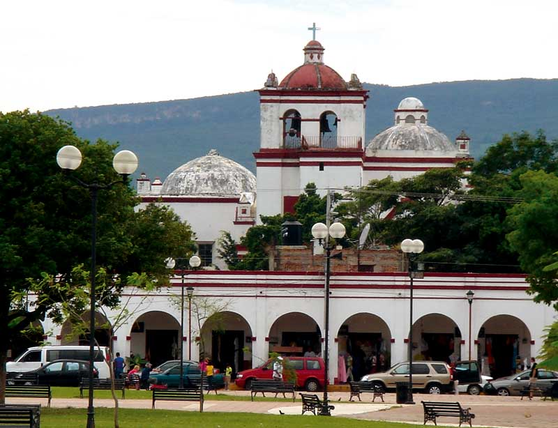
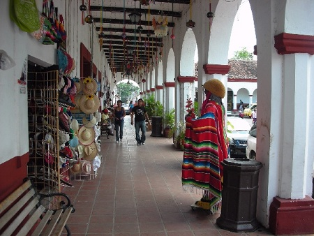
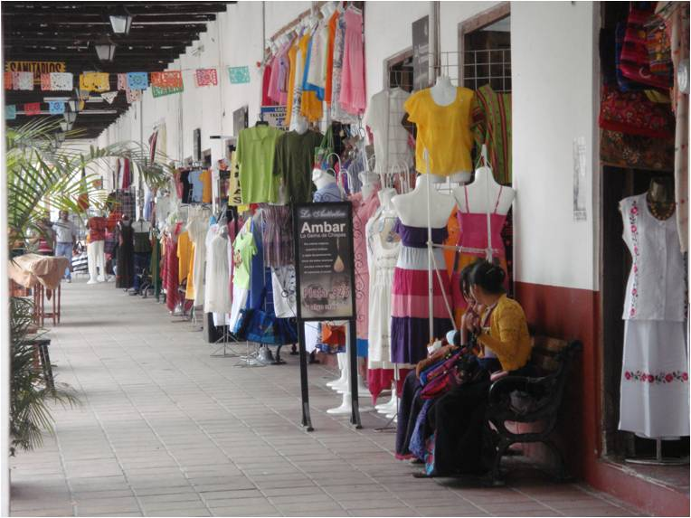
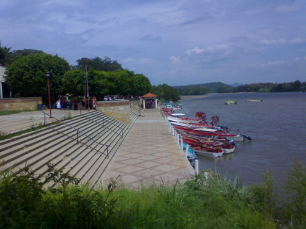
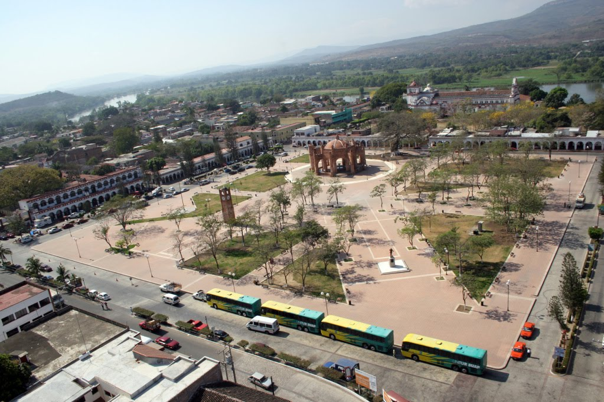

La ciudad de Chiapa de Corzo es la puerta de entrada por vía pluvial al parque Nacional “cañón del sumidero”. Con su bellísimo malecón de chiapa de corzo, a orillas del majestuoso Rio Grande de chiapa se encuentran varios restaurantes, así como servicio de lanchas para hacer recorridos por el Cañón del Sumidero o hacia la Isla de Cahuare.
su exquisita gastronomía, de la que destacan: El cochito y los dulces típicos (suspiro, chimbos, nuegados) y de su bebida tradicional denominada pozol; todos ellos con sabores muy peculiares que deleitaran a tu paladar. Esta famosa ciudad también se distingue por su riqueza artesanal: Laca, talla en madera y bordados que se pueden apreciar en el colorido de los trajes regionales de Chiapaneca y Parachico.
Chiapa de Corzo se localiza a 14 km de Tuxtla Gutiérrez.
Partiendo de Tuxtla Gutiérrez:
salga a la carretera Federal 190/Central Ote/México 190/San Cristóbal de las Casas-Tuxtla Gutiérrez/Tuxtla Gutiérrez-San Cristóbal de las Casas. Manténganse siempre a la derecha, continúe por Victorico Grajales y así continúe por la 5 de Febrero, pasando por 21 de Octubre de 1863, siga hacia su derecha a Capitán Luis Vidal y llegara a Chiapa de Corzo.
Puede recorrer esta grandiosa ciudad colonial, tomar fotos, admirar las iglesias, las artesanías, todas sus tradiciones y costumbres. Y sobre todo deleitarse de su rica y extensa gastronomía colonial. Viajar en lancha sobre todo el malecón de chiapa de corzo.





posicione el mouse sobre las imágenes